IF=14.8| 壁层上皮细胞的单细胞图谱
原文：https://mp.weixin.qq.com/s?__biz=MzAwMzIzOTk5OQ==&mid=2247529318&idx=1&sn=a8bdc79153103c3e7f243169f57d423c&chksm=9b3c0a36ac4b83201a4b6e18e9d957bad1ae8576a8f2fddd506a31794d5ded876738ff03534e#rd 合集：文献速递
一、写在前面
肾小球壁层上皮细胞(Parietal epithelial cell, PECs)位于肾小球囊，分布在足细胞和导管上皮细胞之间，其生物特性与多样性对于足细胞的再生以及新月体形成具有重要意义。有报道证明CD133与CD24共表达的PECs具有足细胞与导管细胞祖细胞特性。表达CD44的增生性PECs参与肾小球硬化与新月性肾小球肾炎的发生。因此，作者通过单细胞测序(single-cell RNA sequencing, scRNA-seq)揭示PECs的亚群(A1、A2、A3、A4、B)组成及分子特征：PEC-A1和PEC-A2具有足细胞祖细胞特征、PEC-A4表现出导管祖细胞特征。动态信号网络分析显示PEC-A4的 激活以及PEC-A3的增殖对新月体形成起到关键作用，而足细胞、免疫细胞、内皮细胞、免疫细胞、系膜细胞释放的信号可作为新月体性肾小球肾炎的致病通路。Mif与Csf1r蛋白在体内可以阻遏发病信号通路，减少肾小球基底膜血管性肾小球肾炎中的PECs的增生及新月体形成。文中提到的单细胞测序分析方法我们的教程里几乎都包含了：生信基地122篇单细胞教程全索引。让我们来详细看一下研究思路与结果。
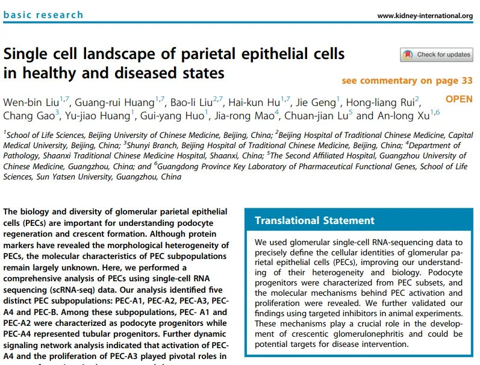
如果需要数据分析指导 、生信热点全文复现 、自测数据个性化分析 辅导、常态化实验学习，欢迎联系客服微信[Biomamba_zhushou]二、主要内容
1、PECs单细胞图谱的多样性值得一提的是，这篇文章的单细胞部分数据来源于数据库(GSE146912、GSE111107、GSE166793)中收录的肾小球scRNA-seq数据(Figure 1a)，其中包含足细胞、PECs、TECs、内皮细胞、免疫细胞、血管平滑肌细胞、系膜细胞(不得不说各个数据集中的细胞比例差异还是蛮大的)。考虑到PECs的数量，作者进一步挑选GSE146912数据(抗肾小球基底膜病的小鼠模型)进行了亚群注释，最终获得了12种细胞类型(Figure 1d-f)。在PECs的亚群分析中，PEC-A高表达Cldn1、Ncam1；PEC-B高表达Dkk3(Figure 1f)。RNA速率及轨迹分析显示足细胞、PECs、TECs之间存在转化关系(Figure 1e)(不过我们之前的课程里提到过，其实任意两种细胞类型，都可以用这类工具生成轨迹图谱：拟时序分析| monocle2实操：完整版)。
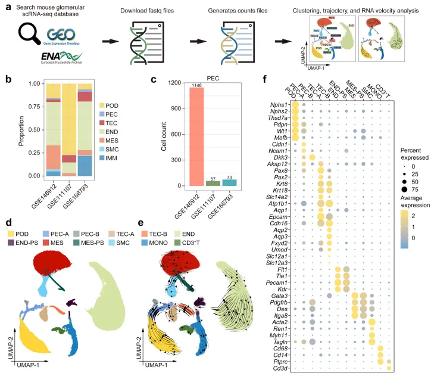
Figure 1a
为了进一步探究PECs的多样性，作者将其分为了五个亚群（Figure 2a,b）：PEC-A1、PEC-A2、PEC-A3、PEC-A4、PEC-B。PEC祖细胞marker(Prom1、Pax2、Sox9)、 足细胞marker(Wt1、Nphs1)、导管细胞marker(Aqp1)在PEC的各亚群中特异性表达(Figure 2d)。通过荧光染色，Claudin1、SSeCKS这类PECs的固有marker以及Wt1、synaptopodin、nephrin这类足细胞marker可用于识别转化状态的PECs与肾小球血管柄。肾小管轮廓外至肾小球囊中存在的Cuboidal PECs可通过keratin8/18A、lotus tetragonolobus agglutinin在小鼠和人类肾脏样本中观察到(Figure S4F-H)。flat与cuboidal PECs的过渡态可通过cyclinD1、Dkk3、Sox9进行标记(Figure S4I-M)。这部分内容证明了PECs各亚群之间存在极性的差异。为了更好的理解它们的生物学功能，作者对各PECs亚群间的差异基因进行了GO富集分析(基因集富集分析)，结果显PEC-A1的top 5通路与肾小球发育相关(具有祖细胞特征)、PEC-A2的通路富集于上皮细胞分化、PEC-A3的通路富集于细胞增殖、PEC-A4的通路富集于代谢分解过程、PEC-B的通路富集于胶原纤维组织(Figure 2e,f)。值得一提地是，PEC-A3仅出现在抗肾小球基底膜肾炎中(Figure 2c)，其表现出与内皮细胞、系膜细胞类似地增殖特性。PEC-A3还高表达Cd44，这一基因在抗基底膜肾小球肾炎中的多种细胞类型中均呈现高表达趋势(Figure S6B,C)。在糖尿病肾病小鼠模型中，PEC-A1的丰度上升，可能与足细胞损伤、纤维胶原组织生成有关(Figure 2c)。PEC-B在肾小球损伤模型中丰度上升，仅存在于CD2AP敲除鼠中出现(Figure 2c)。
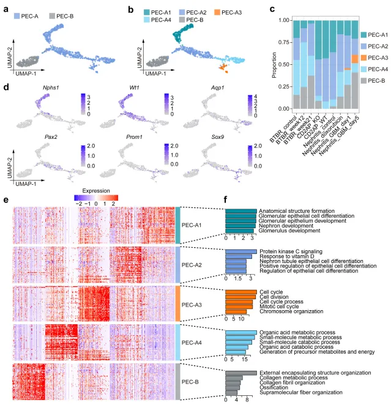
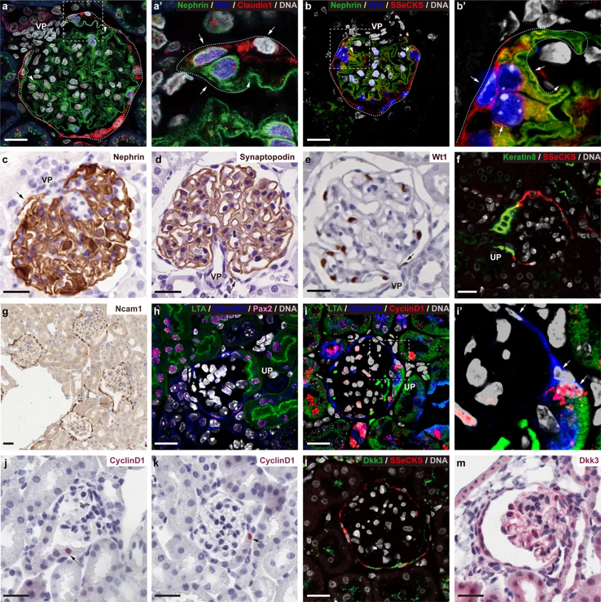
Figure S4
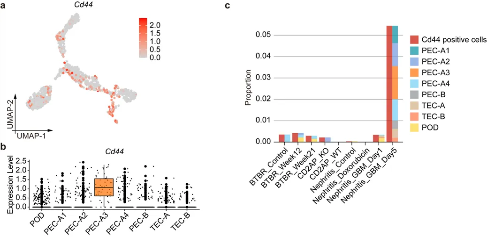
Figure S6
2、PECs亚群、足细胞、TECs细胞之间的转化关系
RNA速率的pseudotime、cell speed、acceleration、divergence、curvature指标分析结果(Figure S7c-h)显示PEC-A2、PEC-A1为足细胞的祖细胞。足细胞的marker(Wt1, Nphs2, Nphs1)在这个过程中展现出了梯度的变化过程(Figure 3d-f)。轨迹分析(一文学会scRNA Velocity剪切速率分析、一文学会四种scRNA-seq轨迹分析)也证明PEC-A2、PEC-A1能够向podocyte转变(但实际上monocle3可以选择轨迹的起点和终点)、 PEC-A4可作为导管细胞祖细胞(Figure 3h-j)。
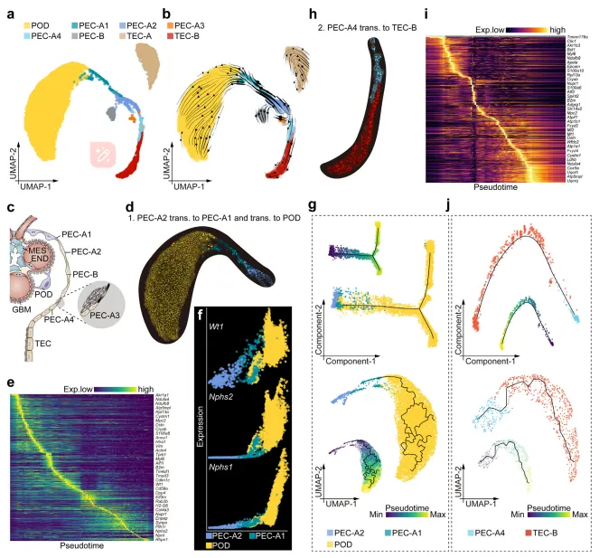
Figure 3
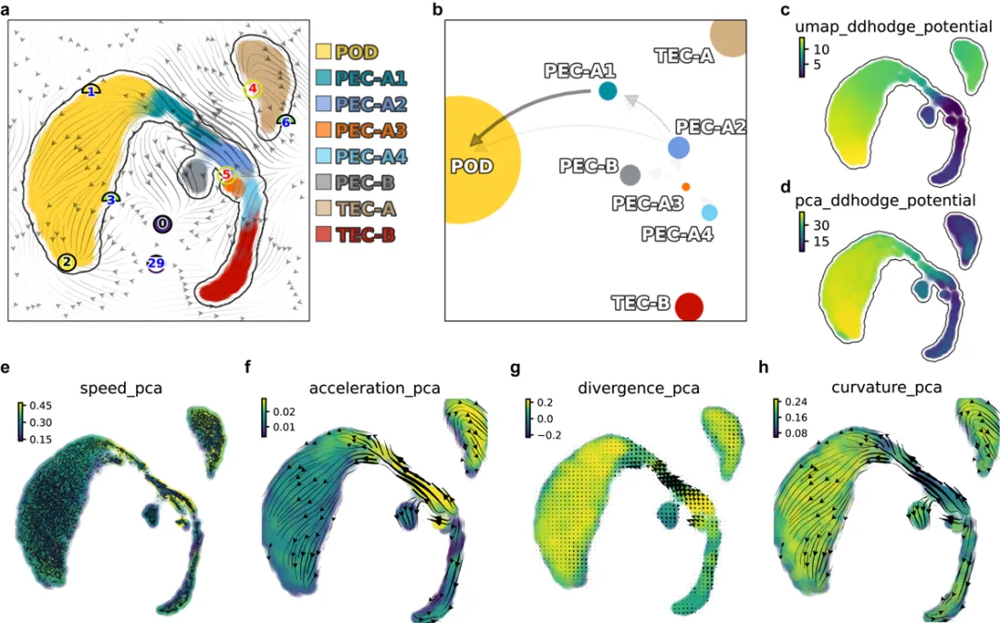
Figure S7
3、足细胞祖细胞在成熟与非成熟肾脏中的转录信号
3周龄及12周龄的小鼠(Figure 4a)足细胞展示出了足够的差异基因，但是PEC-A2和PEC-A1则几乎没有不同周龄带来的差异基因。(Figure S8A)，这可能表明PEC-A2和PEC-A1在三周龄后就处于一个稳定的状态，而足细胞则处在持续发育的状态之中(Figure 4C)。在12周时PEC-A1的表达特征更像PEC-A2而不是足细胞，但3周龄时并没有这样的偏好性(Figure S8B)。转录因子分析(SCENIC单细胞转录因子预测|4.精简版流程)热图显示PEC-A1、PEC-A2、足细胞在3周龄与12周龄时能够分为三个明显的组(Figure 4d)。Pbx3, Wt1, Mafb, Xbp1, E2f1和Rad21在3周与12周时均能够在足细胞富集；Klf13, Junb, Jun, Fos, 与Jund能够在3周的足细胞祖细胞与未成熟的足细胞中富集；Pax8, Sox4, 和Klf4在两个时间点中的足细胞祖细胞中均能够富集。Mafb调控子活性主要活跃于足细胞、PEC-A1中；Junb主要表达于PEC-A1、PEC-A2、部分足细胞中；Pax8主要表达于PEC-A1以及PEC-A2。作者进一步通过regulon对应靶基因的富集分析来确定它们的生物学功能(Figure S8D-F)。足细胞高表达的regulon呈现出与囊泡运输、自噬、RNA剪切相关的通路(Figure S8E)；足细胞祖细胞与未成熟的足细胞富集于上皮细胞迁移、组织发育、Wnt信号通路(这是一个肾脏损伤的关键通路)。这意味着足细胞可能存在与PECs发育之间的反馈作用，例如足细胞可以通过释放Cxcl12来抑制PECs的分化。
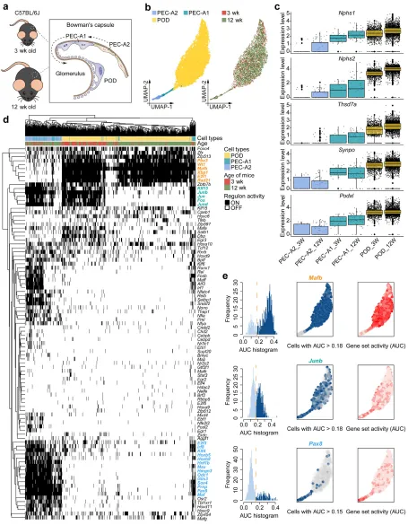
Figure 4
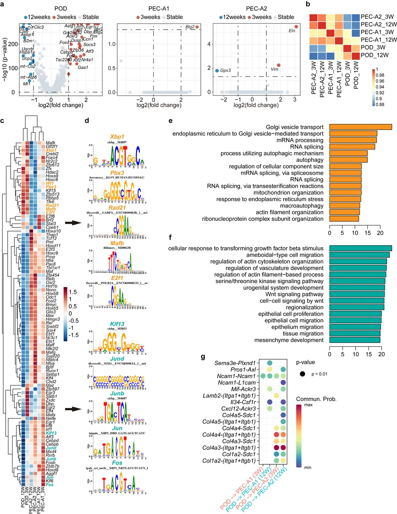
Figure S8
4、病理性的串扰导致PEC激活与增殖
PEC-A3在前面的结果中已被证实高表达Cd44、具有增殖活性且特异性存在于抗肾小球基底膜肾小球肾炎中(Figure 2c)。作者猜测PECs可能受到上游信号的刺激从而产生PEC-A3。UMAP和Cd44表达量显示，PEC-A3与PEC-A4的特征更加接近，且Cd44阳性PECs包含的亚群种类更丰富且在疾病过程中快速上升(Figure 5d)。Cd44的表达趋势也能够通过免疫荧光得到验证(Figure 5e)。Mki67、Top2a、等与增殖相关的基因也与Cd44展现出正相关关系(Figure 5f)。几个亚群的拟时序结果显示，PEC-A4明显有向PEC-A3转化的趋势，PEC-A2明显有向PEC-A1转化的趋势(Figure 5g-i)。转录因子活性热图显示Sox9富集于PEC-A4以及PEC-A3中（Figure 6j,k），而Trp53、Tfdp1、Pole4、Pole3、E2f1这类于增殖相关的regulon富集于PEC-A3中(Figure S12 E、G)。Cd44, Ki67, Sox9, and Tfdp1的表达量在PEC-A3轴中逐渐上升(Figure S12H)。Sox9的染色在抗肾小球基底膜肾小球肾炎中上升，与Ki67及Cd44共同表达(Figure 5l,m)，这可能表明Sox9驱动PEC-A3的出现及新月体的形成。
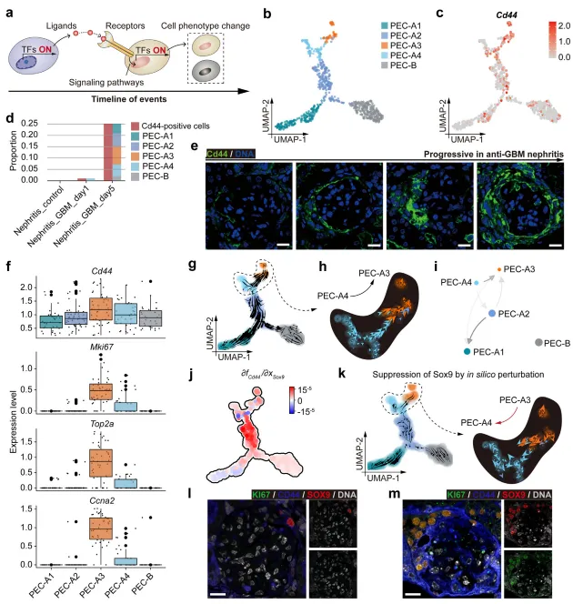
Figure 5
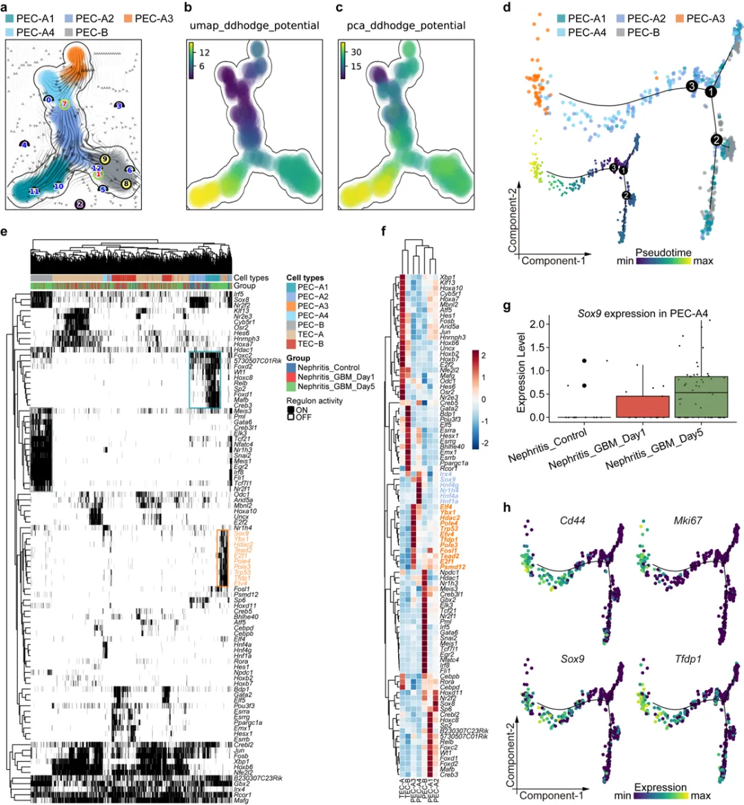
Figure S12
接下来，作者关注诱导PEC-A3出现的上游病理信号。足细胞在抗肾小球基底膜肾小球肾炎中展现出了Mafb、Wt1这类肾小球特异性的regulon的降低以及促炎regulon(Nfkb2、Rela、Relb)的上升，这些指标在第五天时回归正常(Figure S13)。免疫细胞、内皮细胞、系膜细胞并没有展现出类似的表达模式(Figure S14、FigureS15)。
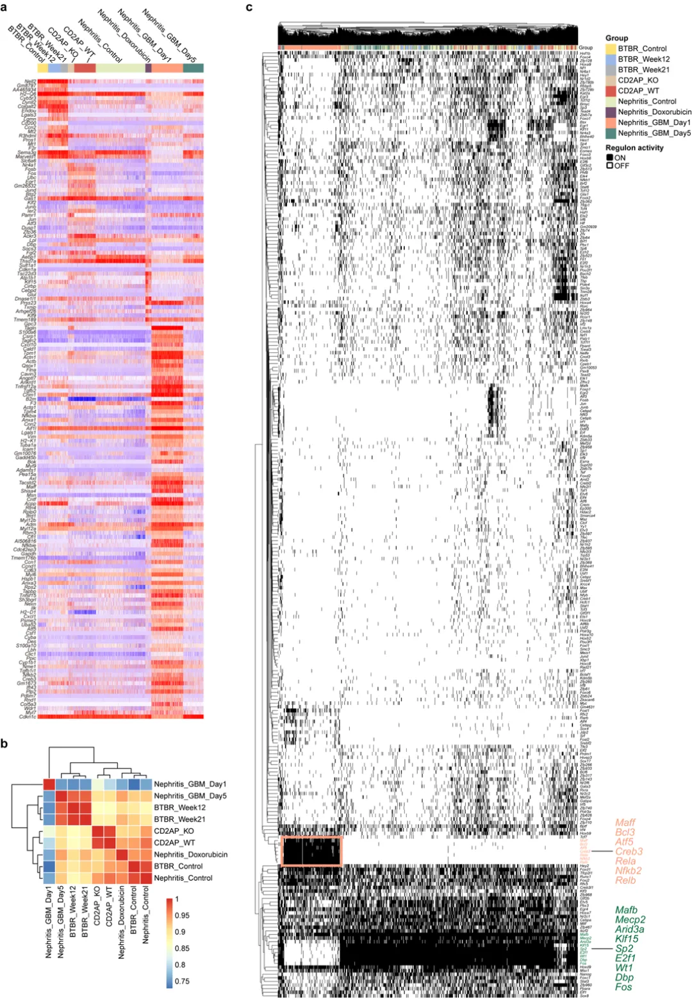
Figure S13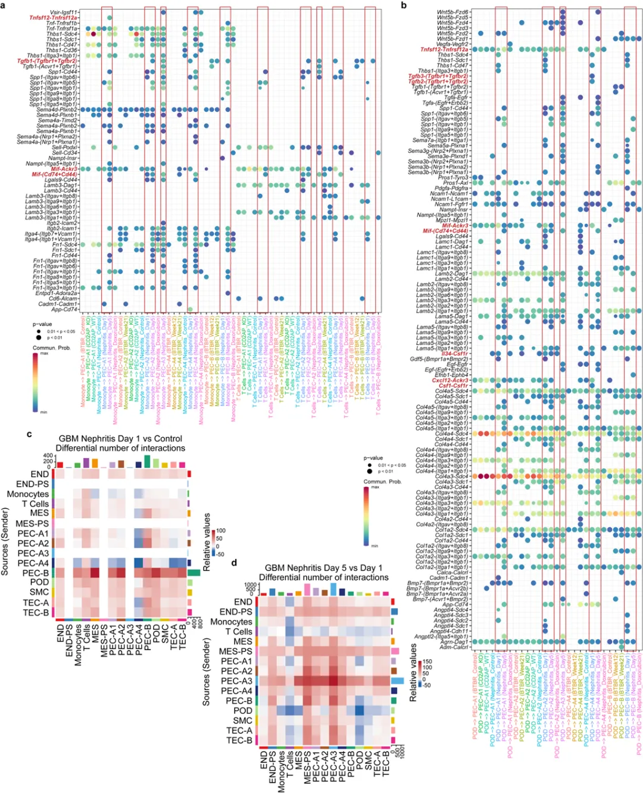
Figure S16 PECs亚群的细胞通讯分析(以podocytes, monocytes, Cd3þ T cells, endothelial cells和 mesangial cells作为通讯的"来源细胞")显示，在第一天时，PEC-B是交流的核心角色但在第五天时被PEC-A3、增殖性系膜细胞、增殖性内皮细胞取代(Figure S16C,D)。WNT, transforming growth factor-b, semaphorin (SEMA), bone morphogenetic protein (BMP), fibroblast growth factor, secreted phosphoprotein 1 (SPP1), insulin-like growth factor (IGF), Notch, vascular cell adhesion molecule, vascular endothelial growth factor, and neural cell adhesion molecule (NCAM) 这类与细胞增殖及迁移的通路在这些增殖性细胞中被观察到(Figure S18)。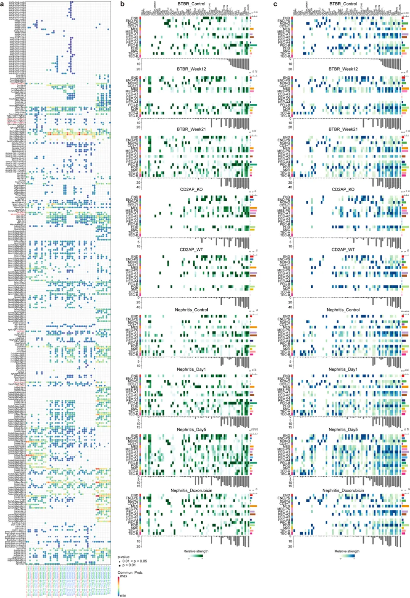
Figure S18在抗肾小球基底膜肾小球肾炎中影响PEC亚群的代表性配受体对包括Mif-Ackr3, Mif-(Cd74 þ Cd44), Il34-Csf1r, Cxcl12- Ackr3, Csf1-Csf1r, and Tgfb2-(Tgfbr1 þ Tgfbr2；Figure 6a)。这些配体随着基本的发生而变化，大部分在足细胞中存在短暂的表达量上升(Figure 6b,c)。促炎配体基因(Mif, Il34, Cxcl12, Csf1, and Tgfb2)的mRNA含量在小鼠的肾小球中也展现出了短暂上升的趋势(Figure 6d)。Nfkb2的表达趋势也与这这些配体相一致。这些趋势也能够在小鼠的免疫荧光中被复刻(Figure 6f,g)，且与新月形肾小球肾炎的发生趋势相一致(Figure 6i)。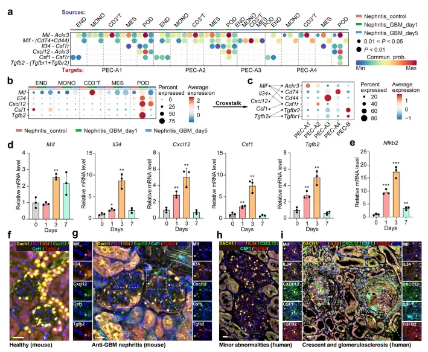
Figure 6
5、阻遏病理信号减少新月体形成
为了证明上面信号通路与疾病的伴随关系的确存在因果关系，作者选择了两种靶向PECs信号通路的抑制剂(Figure 7a)，咖啡酸被用于阻遏Mif配体、索托利替尼被用于阻遏Csf1r。在抑制剂干预实验中，虽然未能显著降低蛋白尿的含量(Figure 7b)，但它们显著提升了肾脏功能且增加了血清中白蛋白的水平；与此同时，未产生任何的肝功能副作用(Figure 7c-g)。肾小球肾炎及新月体形成的肾小球bilious在抑制剂处理组明显降低(Figure 7h-l)。为了探究抑制剂的阻遏效果，磷酸化蛋白p-Csf1r以及p-Mapk在阻遏物治疗组肾小球中表达量更低。表明阻遏剂成功阻遏了病理通路(Figure S22B-E)。肾小球损伤、TECs的空泡样颗粒病变、肾间质的炎性浸润均相较于模型组更低(Figure S23)。总之，治疗成功~
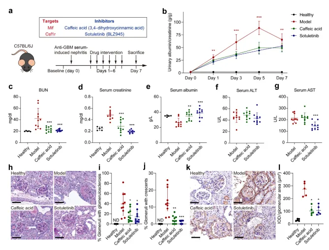
Figure 7a
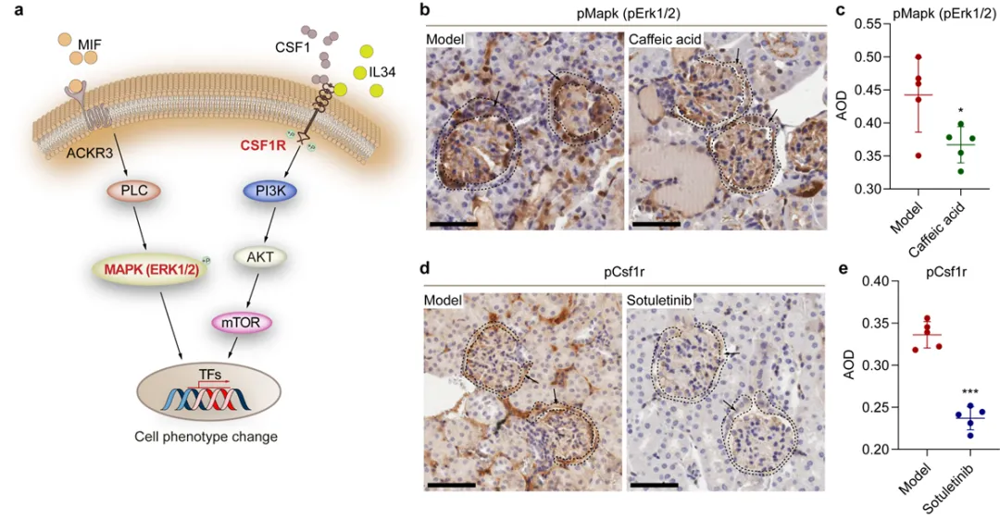
Figure S22
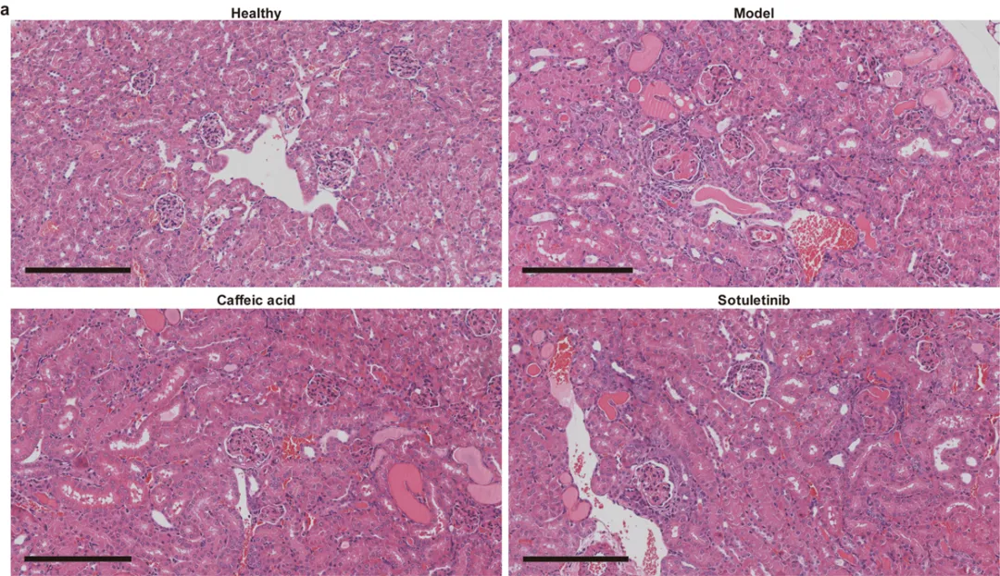
Figure S23
三、最后聊聊
整篇文章的分析和实验结果众多，但这三十多张Figure描述的无非就是PECs这单一细胞类型的故事。作者共鉴定出五种PEC类型，其中的PEC-A3仅在抗肾小球基底膜肾小球肾炎中存在，这种细胞类型展现出很高的增殖能力。PEC-A1则展现出足细胞祖细胞的特征，PEC-A3展现出TECs祖细胞的特征。作者大量的使用了拟时序分析来解析这些亚群之间的演化关系，需要注意的是，拟时序分析只是将一些表达矩阵存在相似性的细胞进行拟合，并不一定就表示这些细胞可以相互转化。经过细胞通讯(《细胞通讯》CellChat学习手册)+转录因子分析(SCENIC单细胞转录因子预测|学习手册)的方法作者找到了与新月体形成的关键通路并通过阻遏物咖啡酸与索托利替尼成功证明了抑制所发现通路能够成功减少新月体的形成与肾脏损伤。感兴趣的同学可以阅读一下原文。参考文献：Liu WB, Huang GR, Liu BL, Hu HK, Geng J, Rui HL, Gao C, Huang YJ, Huo GY, Mao JR, Lu CJ, Xu AL. Single cell landscape of parietal epithelial cells in healthy and diseased states. Kidney Int. 2023 Jul;104(1):108-123. 
如何联系我们

 留一个领取资料、免费两周学习版服务器的微信号[Biomamba_zhushou]，方便各位随时交流。同时我们也构建了交流群矩阵，欢迎大家入群讨论。
大家可以阅读完这几篇之后添加给生信入门初学者的小贴士
如何搜索公众号过往发布内容
留一个领取资料、免费两周学习版服务器的微信号[Biomamba_zhushou]，方便各位随时交流。同时我们也构建了交流群矩阵，欢迎大家入群讨论。
大家可以阅读完这几篇之后添加给生信入门初学者的小贴士
如何搜索公众号过往发布内容
已有生信基地联系方式的同学无需重复添加

 您点的每个赞和在看，我都认真当成了喜欢
您点的每个赞和在看，我都认真当成了喜欢